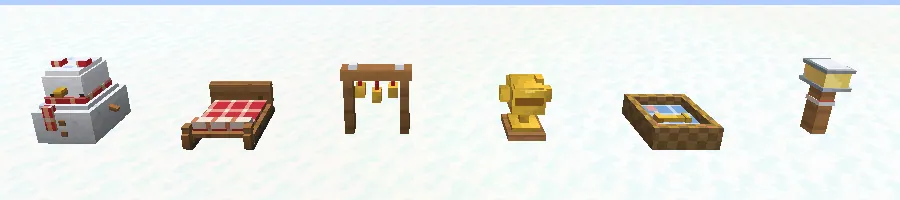

The medicine ride with the Nomguh dog sled: through the snowstorm to the mountain hut and back.
De medicijnrit met de hondenslee van Nomguh: door de sneeuwstorm naar de berghut en terug.
The medicine rideDe medicijntocht
You stand on the runners of a real sled, pulled by four guh-sledehondjes with Baltoguh in front. Keys: W hup hup, S brake, A/D steer, hold Shift to stop. The route is 304 blocks each way, marked with 82 red-and-white routepaaltjes with glowing guh ears. The panel at the top shows the route (stable, rest points, ice bridge, avalanche, berghut), the clock and how warm the dogs are; under the crosshair it tells you what's coming.
Je staat op de glijders van een echte slee, getrokken door vier guh-sledehondjes met Baltoguh voorop. Toetsen: W hup hup, S remmen, A/D sturen, Shift vasthouden om te stoppen. De route is 304 blokken heen en 304 terug, gemarkeerd met 82 rood-witte routepaaltjes met gloeiende guhoortjes. Het paneel bovenin laat de route zien (stal, rustpunten, ijsbrug, lawine, berghut), de klok en hoe warm de hondjes zijn; onder je vizier staat wat er aankomt.
| On the wayOnderweg | What to doWat moet je doen |
|---|---|
| WindvlagenWindvlagen | push you sideways; a whoosh warns you just beforeduwen je opzij; een woesj waarschuwt je vlak ervoor |
| Diepe sneeuwDiepe sneeuw | next to the track: slownaast het spoor: langzaam |
| De ijsbrugDe ijsbrug | narrow and slippery: steer carefully, or plof into the soft snow and try the bridge againsmal en glad: stuur voorzichtig, anders plof je in de zachte sneeuw en probeer je de brug opnieuw |
| De lawineDe lawine | rolls down the Lawineberg: be on the far side of the track (LAWINE van links! Stuur naar rechts) or BOEF, buried and dug out a little way backrolt van de Lawineberg: zorg dat je aan de andere kant van het spoor bent (LAWINE van links! Stuur naar rechts), anders BOEF, bedolven en een stukje terug weer uitgegraven |
| RustpuntjesRustpuntjes | 4 shelters with a vuurkorf: stop there and the dogs warm up (cold paws run slower)4 schuilhutjes met een vuurkorf: stop daar en de hondjes warmen op (koude pootjes lopen langzamer) |
| Baltoguh's noseDe neus van Baltoguh | in a white-out, glowing sniff sparkles show the middle of the trackin een witte storm laten gloeiende snuffelsterretjes het midden van het spoor zien |
At the berghut the ride pauses while the kist is loaded. The way back is timed (4 minutes). At the dieptepunt the clock stops for the wolf moment. You can't get hurt while riding.
Bij de berghut pauzeert de tocht terwijl de kist wordt ingeladen. De terugweg gaat op tijd (4 minuten). Bij het dieptepunt staat de klok stil voor het wolvenmoment. Je kunt niet gewond raken tijdens het rijden.
De slee: the medicine ride, the sledesprint and your own sneeuwsleeDe slee: de medicijntocht, de sledesprint en je eigen sneeuwslee

The winter decorationsDe winterdecoratie
Sneeuwguh, minisleetje, bellenboog, beker, mandje and lantaarn.Sneeuwguh, minisleetje, bellenboog, beker, mandje en lantaarn.
Steps (FTB quests)Stappen (FTB-quests)
The quest texts are in Dutch, like everything in the game.De questteksten zijn Nederlands, net als alles in het spel.
- Door de sneeuwstorm
Rosy en de babyguhs in Nomguh hebben het medicijn nodig! Stuur de slee zelf, met Baltoguh voorop: door de sneeuwstorm naar de berghut en dan op tijd terug naar het ziekenhuisje. W = hup hup, S = remmen, A/D = sturen. Zie je niks meer? Volg de gloeiende snuffelsterretjes van Baltoguh.Rosy en de babyguhs in Nomguh hebben het medicijn nodig! Stuur de slee zelf, met Baltoguh voorop: door de sneeuwstorm naar de berghut en dan op tijd terug naar het ziekenhuisje. W = hup hup, S = remmen, A/D = sturen. Zie je niks meer? Volg de gloeiende snuffelsterretjes van Baltoguh. - Warme pootjes
Onderweg staan vuurkorven. Rem af en sta er even stil: de sledehondjes warmen hun pootjes. Koude pootjes zijn trage pootjes!Onderweg staan vuurkorven. Rem af en sta er even stil: de sledehondjes warmen hun pootjes. Koude pootjes zijn trage pootjes! - Over de ijsbrug
De ijsbrug is smal en glad: de slee glijdt door als je stuurt. Rustig aan, en blijf in het midden. Plof je eraf, dan land je in de zachte sneeuw en mag je het nog eens proberen.De ijsbrug is smal en glad: de slee glijdt door als je stuurt. Rustig aan, en blijf in het midden. Plof je eraf, dan land je in de zachte sneeuw en mag je het nog eens proberen. - Opzij voor de lawine!
Rommelt het boven op de helling? Een lawine! Stuur naar de andere kant van de route voor de sneeuw eroverheen rolt. Te laat? BOEF, ondergesneeuwd: de sledehondjes graven je uit.Rommelt het boven op de helling? Een lawine! Stuur naar de andere kant van de route voor de sneeuw eroverheen rolt. Te laat? BOEF, ondergesneeuwd: de sledehondjes graven je uit. - Je eigen sneeuwslee
Na het verhaal van Nomguh krijg je je eigen sneeuwslee met vier guh-sledehondjes. Zet hem neer op sneeuw en rijd 200 blokken door de witte toendra (of een ander sneeuwland). Ze rennen alleen over sneeuw en ijs! Een kaasknabbel maakt ze extra blij.Na het verhaal van Nomguh krijg je je eigen sneeuwslee met vier guh-sledehondjes. Zet hem neer op sneeuw en rijd 200 blokken door de witte toendra (of een ander sneeuwland). Ze rennen alleen over sneeuw en ijs! Een kaasknabbel maakt ze extra blij. - Sledesprint: makkelijk
Race tegen Steele-Mika (bij de startstreep van Nomguh) op makkelijk: naar de berghut, eromheen en terug. Je tijd komt op het scorebord en in je Guhdex (Minigames).Race tegen Steele-Mika (bij de startstreep van Nomguh) op makkelijk: naar de berghut, eromheen en terug. Je tijd komt op het scorebord en in je Guhdex (Minigames). - Sledesprint: medium
Race tegen Steele-Mika (bij de startstreep van Nomguh) op medium: naar de berghut, eromheen en terug. Je tijd komt op het scorebord en in je Guhdex (Minigames).Race tegen Steele-Mika (bij de startstreep van Nomguh) op medium: naar de berghut, eromheen en terug. Je tijd komt op het scorebord en in je Guhdex (Minigames). - Sledesprint: lastig
Race tegen Steele-Mika (bij de startstreep van Nomguh) op lastig: naar de berghut, eromheen en terug. Je tijd komt op het scorebord en in je Guhdex (Minigames).Race tegen Steele-Mika (bij de startstreep van Nomguh) op lastig: naar de berghut, eromheen en terug. Je tijd komt op het scorebord en in je Guhdex (Minigames). - Sneller dan Steele-Mika
Win de sledesprint van Steele-Mika. Hij zegt vast dat het de wind was. Alle guhs van Nomguh giechelen lief.Win de sledesprint van Steele-Mika. Hij zegt vast dat het de wind was. Alle guhs van Nomguh giechelen lief. - Kampioen van Nomguh
Win de sledesprint op lastig. Dan ben jij de snelste sledeleider van heel Nomguh. Njeh-heh... eh, VAHOEG!Win de sledesprint op lastig. Dan ben jij de snelste sledeleider van heel Nomguh. Njeh-heh... eh, VAHOEG! - Winterspulletjes
Steele-Mika heeft een winkeltje: een sneeuwguh, een minisleetje, sledebellen, een routelantaarn, een sledehondenmandje en de gouden sledesprintbeker. Koop de sledebellenboog voor je sledebelletjes.Steele-Mika heeft een winkeltje: een sneeuwguh, een minisleetje, sledebellen, een routelantaarn, een sledehondenmandje en de gouden sledesprintbeker. Koop de sledebellenboog voor je sledebelletjes.
See alsoZie ook
 NomguhStructuresBouwwerken
NomguhStructuresBouwwerken Baltoguh and NomguhBaltoguh en NomguhStoriesVerhalen
Baltoguh and NomguhBaltoguh en NomguhStoriesVerhalen The Nomguh sled sprintDe Nomguh-sledesprintMinigames
The Nomguh sled sprintDe Nomguh-sledesprintMinigames